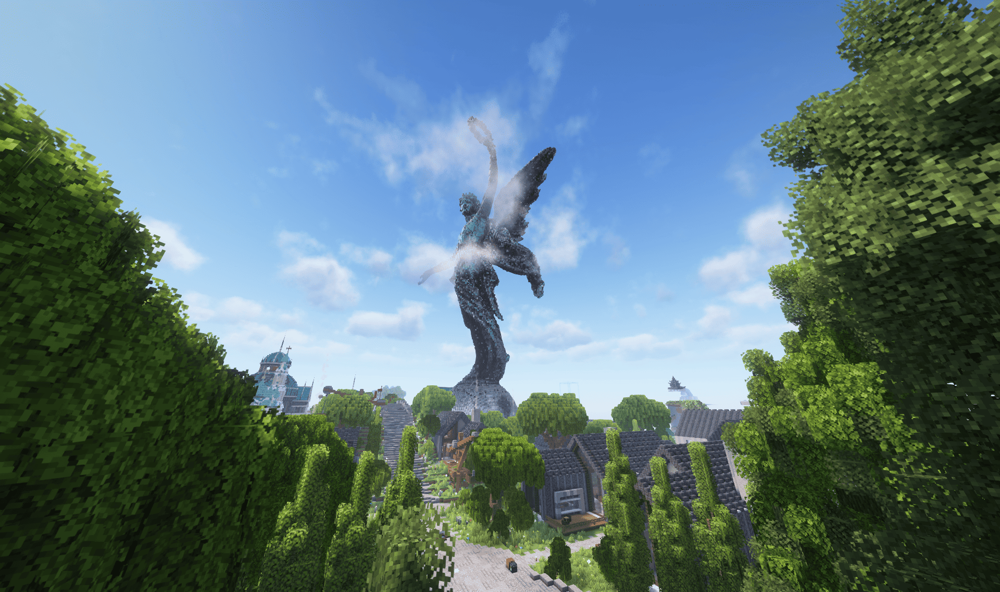
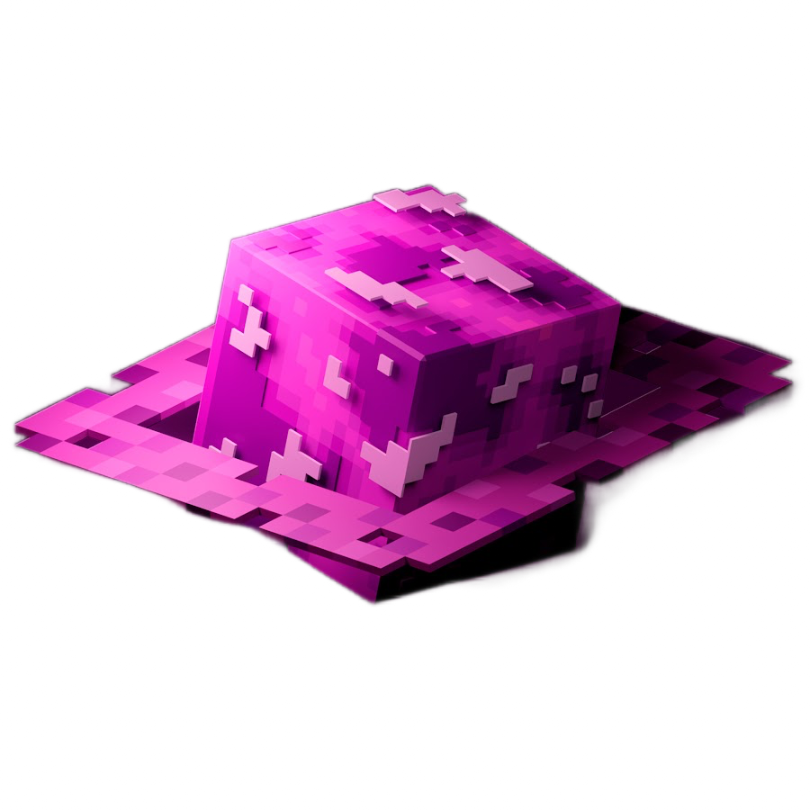

Та самая ванилла
Без /spawn, /kit и лишних упрощений. Рабочие фермы, ванильный спавнрейт и механики, дополняющие игру.
НАСТОЯЩЕЕ ВЫЖИВАНИЕ
Ванильное выживание в уютной атмосфере и среди дружелюбных игроков. Сервер доступен бесплатно и без лицензии. Подходит для версий от 1.21.11 до 26.2.

ОТКРЫТ ДЛЯ ТВОИХ ИДЕЙ A / 009Astrum — ванильный полу-РП проект, где каждый выбирает своё приключение. Исследуйте мир, стройте уютные дома, развивайте фермы или объединяйтесь с другими игроками в города. Участие в РП необязательно: можно заниматься любимым делом и просто наслаждаться выживанием. Здесь ценят совместные проекты, добрососедство и уважение к чужому труду.
Без /spawn, /kit и лишних упрощений. Рабочие фермы, ванильный спавнрейт и механики, дополняющие игру.
НАСТОЯЩЕЕ ВЫЖИВАНИЕСтрой города, знакомься и участвуй в жизни сообщества. Министры и РП — по желанию, а не по обязанности.
БОЛЬШЕ, ЧЕМ СОСЕДИБез приватов, с правилами против грифа и краж. Здесь ценят твои постройки, время и уважение к другим.
Читать правилаПознакомься с сообществом и заполни небольшую заявку.
Лицензия не нужна. Поддерживаются версии 1.21.11–26.2, рекомендуем 26.2.
Добавь astrums.pro в список серверов. Твоя история начинается здесь.